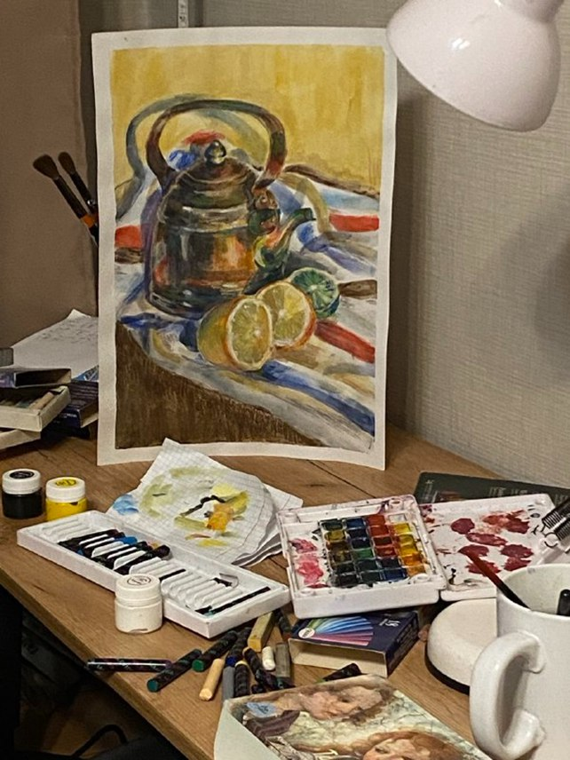
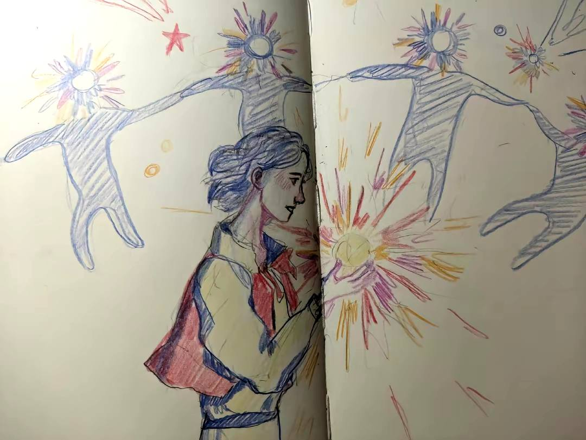
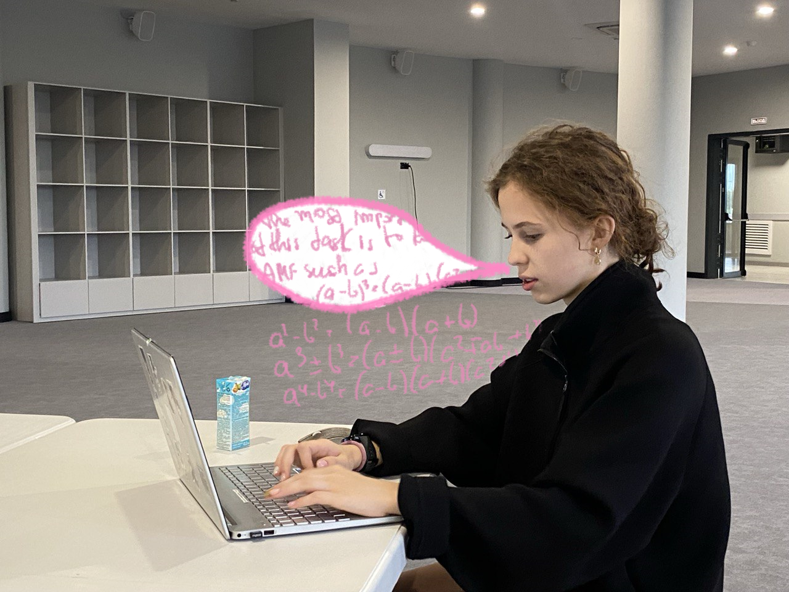
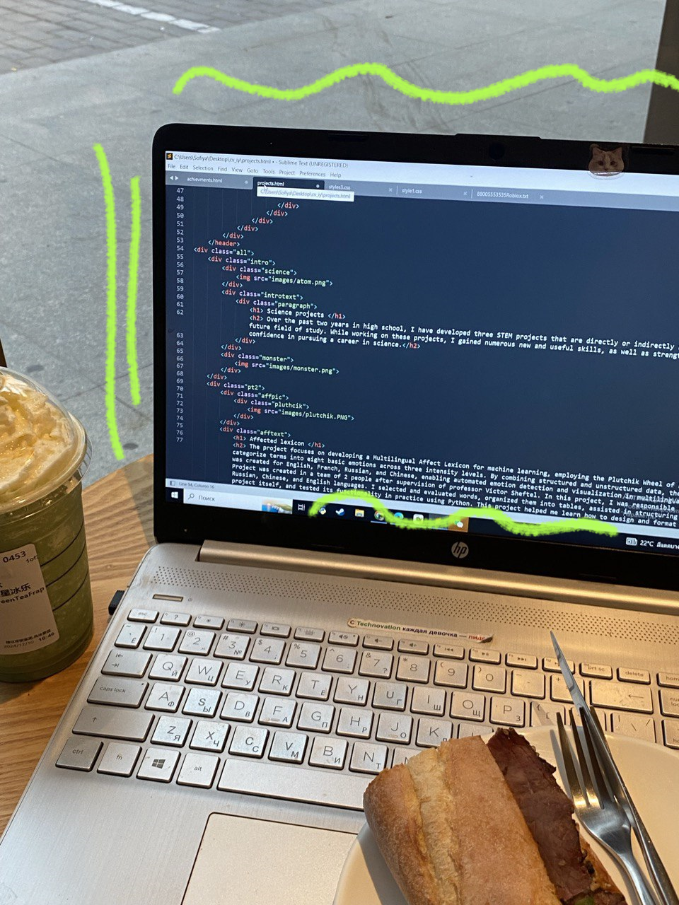
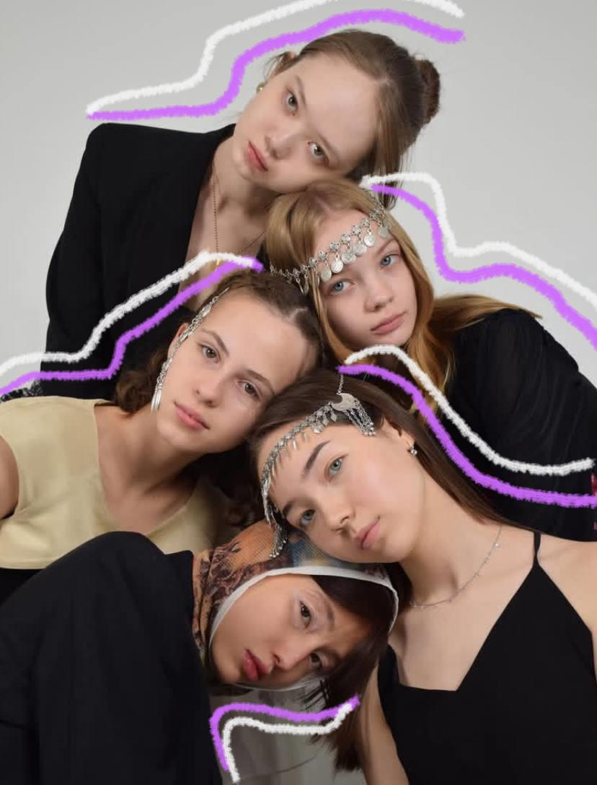

Activities
Throughout my life, I have tried and explored many different activities and hobbies, and I consider myself a versatile person. Here are some of them.

Drawing
My mom's job has almost always been connected to creativity in one way or another. Because of this, she instilled in me a love for art from a young age, teaching me how to draw, sculpt, learn art history, create crafts, and explore fashion. If someone were to ask me how long I’ve been drawing, I wouldn’t be able to answer, as I first picked up pencils at such an early age that I can’t even remember. Most of the time, I learned to draw at home, but I also attended art school. Although I currently don’t have much time to dedicate to drawing, I still love this hobby very much.

Sport
"A healthy mind in a healthy body"—this is a saying often heard in my homeland. Sports, in all their diverse forms, have always been an integral part of my life. Over the past 18 years, I have explored and continue to explore various sports, which has helped me stay prepared for any challenge. Karate, ballroom dancing, chess, archery, shooting with pistols and rifles, and diving are just a few examples. I dedicated two years to synchronized swimming, five years to rock climbing, and one year to track and field. While I no longer pursue a professional sports career, I still stay active—playing tennis during the summer and skiing or snowboarding in my hometown during the winter.

Math tutoring
In my spare time, I work as a math tutor for children in grades 1-7 and also help my peers prepare for the national exam, ENT. I started tutoring this summer after scoring 48 out of 50 on the national math exam, which is considered an excellent result and demonstrates my competence in the subject. Already, my students have reported significant improvements in their academic performance and a better understanding of the material. I absolutely love mathematics and am thrilled to have the opportunity to show the younger generation that this subject isn’t as intimidating as it may seem to many, but rather fascinating and incredibly useful!
Coding and creating websites
In addition, I do programming now and then.It’s not just about coding for me—I genuinely enjoy the creative process of designing web pages too. I’m experienced in HTML & CSS, Python, and have some experience developing games using engines like Unity and PyCharm. I have several programming-related projects in mind for the future. By the way, I designed and created this entire website myself!

A volunteer model for an ethnic fashion show.
In 2023, I worked as a model and had the honor of participating in the "Beyond Kazakh Glam" fashion show. This event celebrates Kazakh national style, seamlessly blending it with everyday looks and contemporary fashion while supporting local designers. At the show, I contributed as a volunteer model.
The fashion show's Instagram
